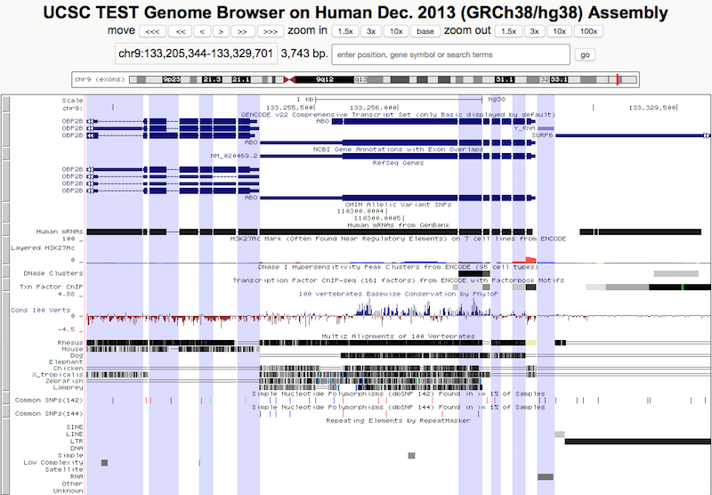

Multi Region Display Help
Introduction
The multi-region display allows users the ability to "slice" up their normal track viewing experience into a variety of different modes: exon, gene, or user defined BED coordinates, and visualize the track annotations only in those regions, effectively removing the intergenic, intron or otherwise unwanted regions from the viewing window.
In addition, for the human assemblies hg17, hg18, hg19 and hg38, the multi-region view also supports embedding a haplotype chromosome on top of it's reference sequence in order to visualize the differences between the haplotype sequence and the reference sequence.
Using the multi-region display, one can:
- Show all the SNP's that are within exons using the exon only view. ### make examples section same as these examples? or different?
- Show only the genes on a chromosome with the gene only view.
- Display the same chromosomal position on either side of a gene in order to model a repeat region using a BED file with custom regions.
- See how an alternate haplotype fits onto it's chromosome with the alternate haplotype view.
Getting Started with the multi-region view
Use the following instructions to display mutliple regions in the genome browser.
Step 1. Pick a genome assembly and region
- Select the genome assembly you would like to view just as when normally viewing an assembly, by using the top menu's Genomes link. If you would like to view custom regions for your assembly hub, navigate to it's browser display as normal.
- Once an assembly has been selected, you may search for a gene of interest or select a region to view using the Genome Browser search bar if desired, just as normal.
Step 2. Select the multi-region view
- Click while on the default display
page to bring up the multi-region configuration window.

- By default the Show single-chromosome view will be selected. This is the standard Genome Browser display, and can be used to return to a standard display.
Step 3. Configure the multi-region view
|

|
The result of selecting Show exons and Highlight alternating regions 
After entering multi-region mode, the usual browser display configurations will still work, such as zooming in and out, reversing and resizing the view, highlighting and zooming to highlighted selection, and track search.
###### NEED TO REWORD ######
Searching and zooming while using custom BED regions are a little different than while in
exon or gene only and haplotype mode. Searching should work normally when in gene only,
exon only, and haplotype mode, however in custom regions mode, when a term or position
is entered into the search box from the tracks display page, the browser first searches
for the term within the multi-region view, and if found, the browser will zoom to that
feature. If the term is not found, then the browser will search the default search set
and redirect if found.
About the multi-region view
Exon Only View
The exon only view removes any bases that fall within an intron from the display, thus
removing those annotations as well. The intergenic sequence is also removed, thus the
browser display will only consist of annotations and bases that fall within an exon or
padding region.
The padding field defines the number of intronic or intergenic bases to buffer
each "slice" of the view.
### Screen here of end of an exon, padding bases and next exon ###

The exon only view uses various gene tracks to compute where to "slice" the
display, but only uses the highest priority track per organism. Thus if your
organism has multiple gene tracks available, only one gene track will be used to
pull exon positions from. If you are noticing intron regions in your display while you
are in exon only mode, be sure that you have the correct gene track turned on. The
track used will be listed next to genes option in the multi-region configuration
window, as both the exon and gene only view use the same track.
#### Also need to mention jumping of position if no annotations in view ####
If the gene track used to compute the slicing is a
super track link help page here
or contains other transcripts, then only the longest exons will be used to determine
slices, regardless of whether or not they are in the same transcript. The below screenshot
shows the exon only view for the SOD1 gene in human. The 3rd "exon" from the
left falls within the intron of the actual SOD1 gene, but is shown as an exon because it
is part of the GENCODE v22 super-track.
### Screenshot of SOD1 hg38 in exon only mode ###

Gene Only View
The gene only view is similiar to the exon only view, however it removes all
intergenic bases in a given range, thus only displaying annotations that fall within the
coordinates of a gene.
As with exon only mode, gene only mode uses the padding field to set the number of intergenic bases to buffer each gene.
Again similiar to exon only mode, gene only mode also uses the longest transcript from its reference gene track as the region to display?
Custom Regions
The custom regions from BED URL mode allows the browser to display only those coordinates specified in a BED file, and thus allows for user-specific modeling of various regions.
### Write about comments here ###
options are #database #shortDesc and #padding
only grabs positions from BED3 or BED12, all other bed options ignored
For instance, one may create a BED file containg different regions from across mutliple
chromosomes, like Example 3 below, and you can now
explore 3 different chromosomes at one time.
Or, if a repeat region was clogging up your normal browser display, you could specify a BED file containing the upstream portion you are interested in, one unit of the repeating element, and then downstream region, to gain a better understanding of what is around the repeat. This is only possible if the BED file has the correct coordinates in the right order, as the display only depends on the order of regions specified in the file, not the coordinates relative genomic position to each other.
It is important to note that the BED files supported can be of any type, although
only information from BED 3 or BED 12 files are relevant to the display. Be careful
about the order of the regions specified, as the "slices" displayed are in
order of the BED file, and not in order of their genomic position. Check out
Example 4 for an illustrative example of how
important this ordering is.
As mentioned in the Getting Started section, searching, scrolling and zooming while viewing regions from a custom BED URL may be a little counterintuitive. While viewing multiple custom regions, your view is limited to only the regions you have specified, so although you can still zoom in down to single base resolution you can only zoom out as far as the intial view, and the up and downstream scrolling is also limited to the range specified by the BED file.
Haplotype
The human hg38, hg19, hg18 and hg17 assemblies all possess an extra feature while using the multi-region view: showing an alternate haplotype on it's chromosome.
For a list of possible haplotypes, check the goldenPath/hg$/bigZips/hg$.chrom.sizes file
# Picture of link here #
Any haplotype of the form chr_name_alt can be placed on it's chromosome,
unlike the random and unplaced sequences, which are currently not supported by
the multi-region view.
# Example of haplotype view #
Notes about haplotype display
- Only one haplotype can be displayed at a time. Thus you cannot display multiple haplotypes on the same chromsome to see how they compare.
Be careful zooming out too far while using the haplotype view. You may zoom out off the end of a chromsome and onto the next one. Theoretically you could display all 25 chromosomes this way, although it will be slow.
Examples
BED3 example
# show multiple chromosomes
Displaying regions from multiple chromsomes Multi-region view also supports BED files specifying regions from across multiple chromosomes, allowing display of annotations from different genomic regions in the same browser window. The following file specifies regions from across three different chromosomes:
chr9 133255000 133276861
chr21 31659622 31668931
chr13 69700594 69708459
Again the multi-region view will display the "slices" according to the order
specified in the BED file, and allows the same region to be displayed twice.
BED12 example
# be sure to emphasize how regions show in order specified
not genomic order
# probably should be from same chromosome since bed3
example is from mult chromosomes
Displaying regions from the same chromsome
The following BED12 example specifies
a 3 block region on chromsome 22 between bases 1000 and 5000, and a second 3 block
region between bases 2000 and 6000:
chr22 1000 5000 cloneA 960 + 1000 5000 0 3 567,488,900, 0,2512,3100
chr22 2000 6000 cloneB 900 + 2000 6000 0 3 433,399,800, 0,2601,3200
When loaded as a custom track, we can see that there are overlapping regions, as well
as a block between positions 2001 and 2433.

Now examine this region under the multi-region view, with the above BED12 positions
loaded as a custom BED URL.
The positions display in the order specified by the BED file, not by genomic position. Notice how the # need to update later # block is in the fourth region, not the second region, as in the custom track example.
For an example BED12 URL, click here.